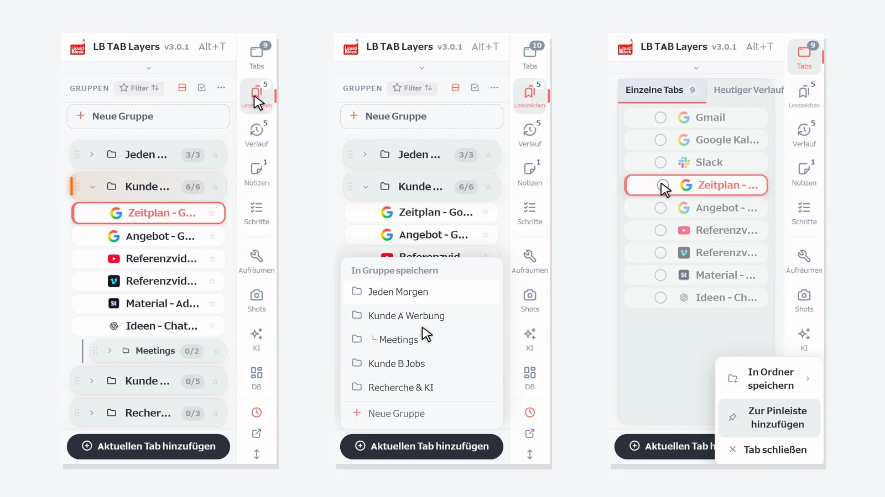
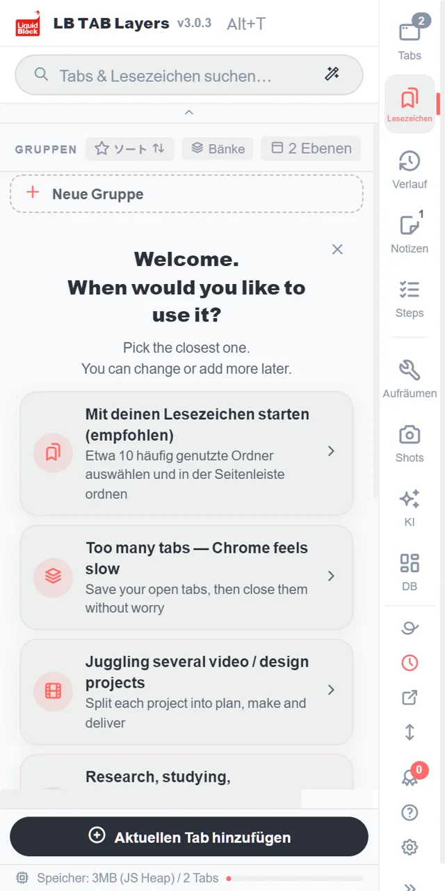
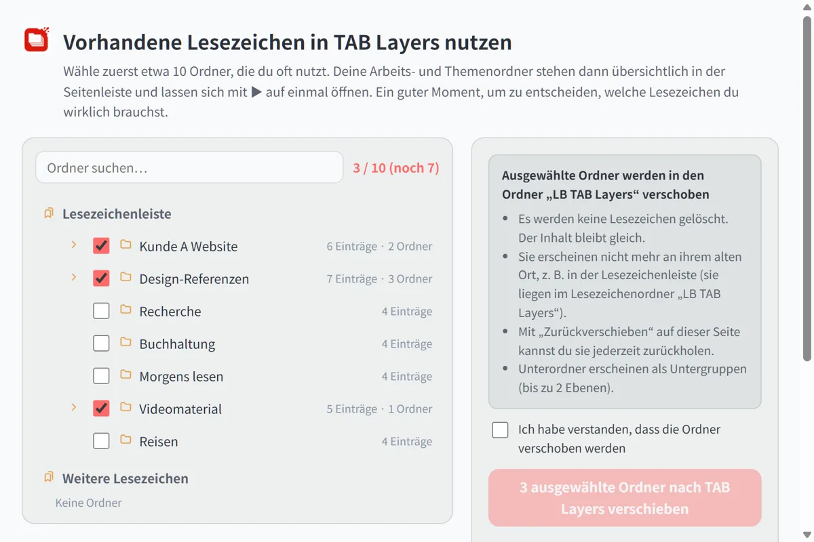
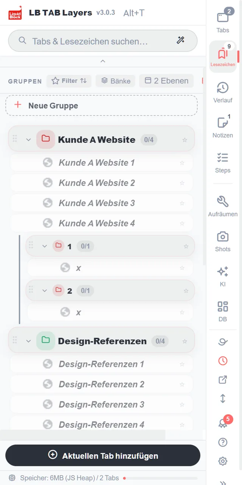
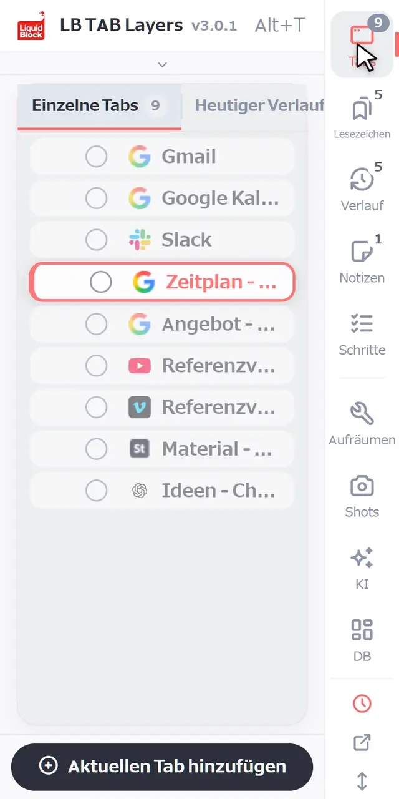
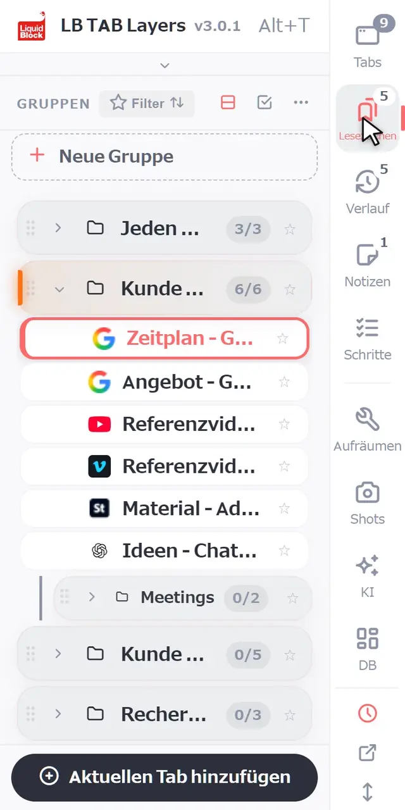
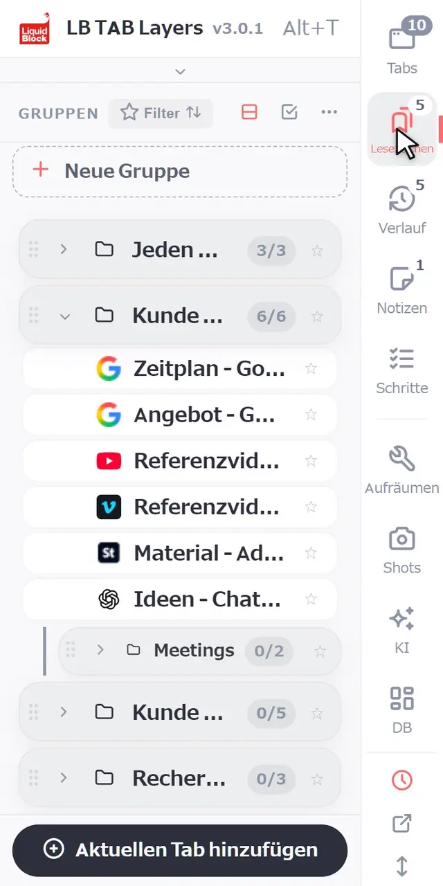
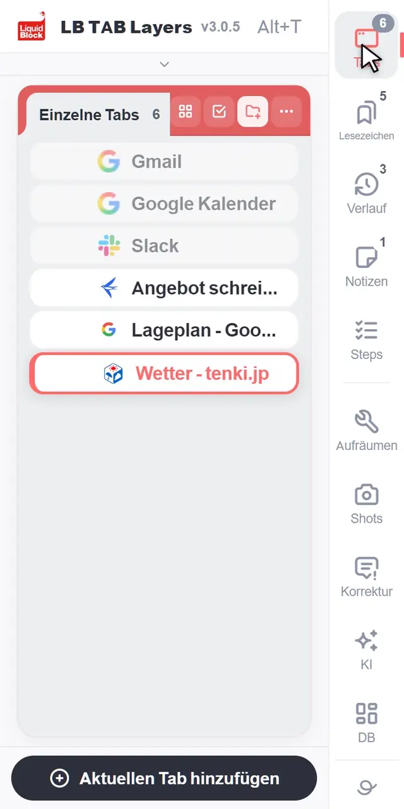
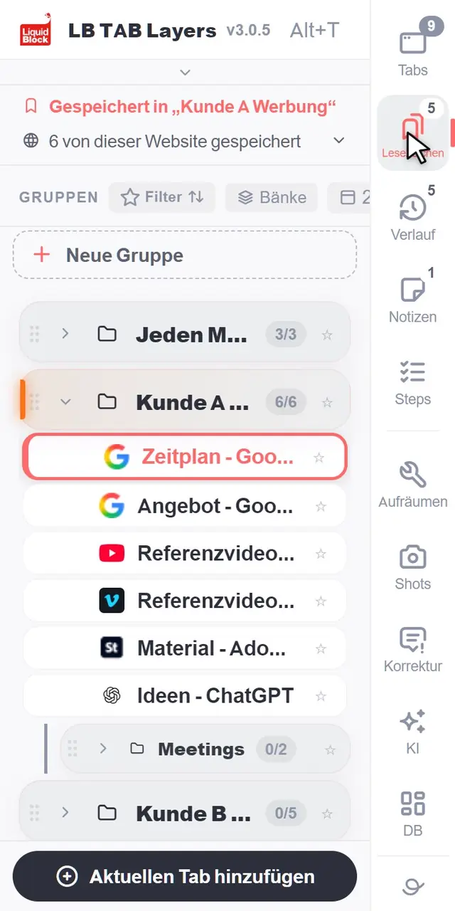
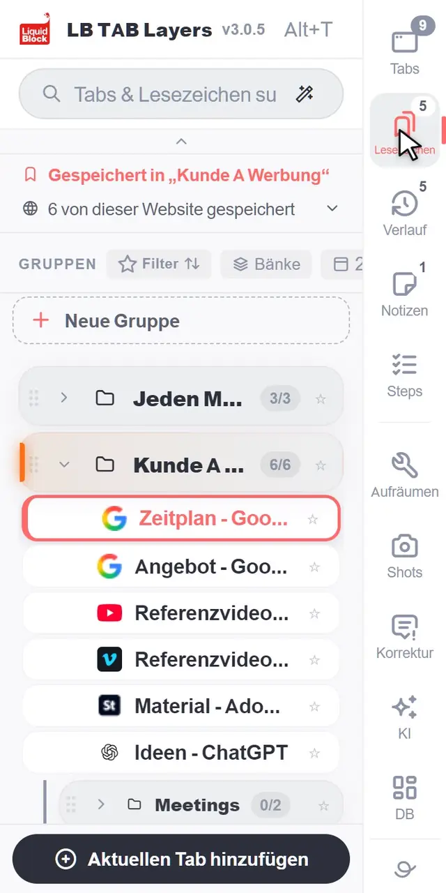

Mit Alt+T (auf dem Mac Option+T) öffnest du LB TAB Layers. Am Anfang musst du nur drei Dinge kennen: Mit Aktuellen Tab hinzufügen speicherst du den Tab, auf dem du gerade bist. Mit ▶ öffnest du eine ganze Gruppe, mit ■ schließt du sie wieder. Alles, was du speicherst, liegt als Chrome-Lesezeichen vor. Es bleibt also erhalten, auch wenn du die Tabs schließt oder Chrome neu startest.
Danke, dass du LB TAB Layers installiert hast. Auf dieser Seite steht nur das, was du in den ersten fünf Minuten brauchst.
Die Idee ist einfach: Tabs sind „jetzt“ – woran du gerade arbeitest. Lesezeichen sind „später“ – worauf du zurückkommen willst. Der heutige Verlauf ist das „Protokoll“ dessen, was du dir angesehen hast. In LB TAB Layers wechselst du in einem einzigen Seitenbereich zwischen allen dreien.
💡 Mit Alt+T (auf dem Mac Option+T) öffnest du es jederzeit. Du kannst auch auf das LB TAB Layers-Symbol in der Symbolleiste klicken. Wenn du das Symbol nicht siehst, klicke auf das Puzzle-Symbol und hefte LB TAB Layers an.
Zuerst: vorhandene Lesezeichen in TAB Layers übernehmen (empfohlen)
Wenn du in Chrome schon Lesezeichenordner hast, ist es am schnellsten, diese zuerst in TAB Layers zu übernehmen. Du musst keine neuen Gruppen anlegen: Deine vorhandenen Ordner werden zu Gruppen für jedes Projekt oder Thema und stehen übersichtlich in der Seitenleiste.
Auf „Mit deinen Lesezeichen starten (empfohlen)“ klicken
Es steht ganz oben auf dem Willkommensbildschirm direkt nach der Installation. Später erreichst du es über Einstellungen → Daten → Lesezeichen oder über „Lesezeichen übernehmen“ oben im großen Dashboard.

Die Ordner wählen, die du oft nutzt (zu Beginn etwa 10)
Deine Chrome-Lesezeichenordner werden aufgelistet. Hake die an, die du oft nutzt. Ein Zähler wie „3 / 10“ zeigt, wie viele du gewählt hast. Es müssen nicht alle sein – ein guter Moment, um zu überlegen, welche Lesezeichen du wirklich brauchst.

„Ich habe verstanden, dass die Ordner verschoben werden“ anhaken und verschieben
Die Ordner wandern in den Ordner „LB TAB Layers“ in deinen Chrome-Lesezeichen. Nichts wird gelöscht, der Inhalt bleibt gleich. An ihrem alten Ort (z. B. der Lesezeichenleiste) erscheinen sie nicht mehr, aber mit „Zurückverschieben“ auf derselben Seite holst du sie jederzeit zurück.
Sie erscheinen als Gruppen in der Seitenleiste
Jeder Ordner wird zu einer Gruppe, Unterordner werden zu Untergruppen. Mit dem ▶ einer Gruppe öffnest du alle ihre Seiten auf einmal.

1. Der Bildschirm im Überblick
Am Rand des Bereichs läuft eine Spalte mit Schaltflächen nach unten: Tabs, Lesezeichen, Verlauf, Notizen und Schritte. Ein Klick wechselt zur jeweiligen Ansicht. Die kleinen Zahlen zeigen zum Beispiel, wie viele Tabs offen sind und wie viele Gruppen du hast.
- Tabs — die Tabs, die gerade offen sind und noch nirgends gespeichert wurden
- Lesezeichen — deine gespeicherten Tabs, in Gruppen sortiert, eine pro Projekt
- Verlauf — die Seiten, die du heute besucht hast, auch die nicht gespeicherten
- Notizen und Schritte — Notizen zu deiner Arbeit und Checklisten, die du Schritt für Schritt abarbeitest
Unter der Trennlinie liegen Werkzeuge. Die brauchst du am ersten Tag noch nicht.

2. Die Grundlagen
Eine Gruppe anlegen
Klicke in der Ansicht Lesezeichen oben in der Liste auf + Neue Gruppe. Benenne sie nach einer Aufgabe, etwa „Kunde C Website“ oder „Jeden Morgen“. Am besten funktioniert eine Gruppe pro Projekt.

Den aktuellen Tab speichern
Klicke unten im Bereich auf Aktuellen Tab hinzufügen und wähle eine Gruppe. Gruppen, in denen die Seite schon liegt, sind mit Gespeichert markiert.

Mehrere offene Tabs auf einmal speichern
Klicke in der Ansicht Tabs auf den Kreis links neben einem Tab, um mit der Auswahl zu beginnen. Klicke dann die Kreise der anderen Tabs an, die du speichern willst. Klicke anschließend unten auf In Gruppe und wähle eine Gruppe. Du kannst Tabs auch einzeln auf eine Gruppe ziehen.

Alles mit ▶ öffnen, alles mit ■ schließen
Fahre mit der Maus über eine Gruppe und klicke auf ▶, um alle ihre Tabs zu öffnen. Sie öffnen sich zusammen als Chrome-Tab-Gruppe mit demselben Namen und derselben Farbe wie deine Gruppe. Wenn du fertig bist, schließt du mit ■ die ganze Tab-Gruppe auf einmal. Deine gespeicherten Tabs bleiben gespeichert.

Suchen
Tippe oben ins Suchfeld, um deine offenen Tabs, deine gespeicherten Tabs und den heutigen Verlauf gemeinsam zu durchsuchen. Kleine Tippfehler sind kein Problem.

3. So behältst du deine Arbeit im Griff
Eine Gruppe pro Projekt
Stell dir eine Gruppe wie einen Schreibtisch für eine einzige Aufgabe vor. Damit kommst du durch den ganzen Tag:
- Am Morgen — klicke beim heutigen Projekt auf ▶ und mach da weiter, wo du aufgehört hast
- Wenn du die Aufgabe wechselst — schließe das aktuelle Projekt mit ■ und öffne das nächste mit ▶
- Am Feierabend — einfach auf ■ klicken. Morgen holt ▶ alles zurück
Seiten, die du täglich nutzt, auf die Pinleiste
Für Seiten, die du jeden Tag öffnest, etwa dein E-Mail-Postfach oder deinen Kalender, klicke mit der rechten Maustaste auf einen Tab oder ein Lesezeichen und wähle Zur Pinleiste hinzufügen. Sie liegen dann als kleine Symbole oben im Bereich und öffnen sich mit einem Klick (bis zu 12). Du kannst sie auch dorthin ziehen.
Jedem Projekt ein eigenes Fenster
Klicke mit der rechten Maustaste auf eine Gruppe und wähle In neuem Fenster öffnen. Dann öffnet sie sich als Tab-Gruppe in einem separaten Fenster. Das ist praktisch, wenn du an zwei Dingen parallel arbeitest oder einen zweiten Monitor nutzt.
Etwas vergessen zu speichern? Der heutige Verlauf hat es
Du musst nicht alles speichern. Seiten, die du nicht gespeichert hast, findest du weiterhin unter Verlauf, in der Reihenfolge, in der du sie heute besucht hast. Speichere das Wichtige in einer Gruppe und schließe den Rest – mehr braucht es meistens nicht.
🔒 Alles, was du speicherst, liegt als Chrome-Lesezeichen vor. Deine gespeicherten Tabs bleiben erhalten, auch wenn du sie schließt oder Chrome neu startest, und LB TAB Layers schickt deine Lesezeichen nirgendwohin. Daten innerhalb der Erweiterung, zum Beispiel Notizen, kannst du in den Einstellungen exportieren.
Zehn weitere Aktionen findest du in der Anleitung (auf Englisch).
Häufige Fragen
Q. Wie öffne ich LB TAB Layers?
Drücke Alt+T auf der Tastatur (auf dem Mac Option+T). Du kannst auch auf das LB TAB Layers-Symbol in der Symbolleiste klicken.
Q. Verschwinden meine gespeicherten Tabs, wenn ich die Erweiterung deinstalliere?
Nein. Gespeicherte Tabs bleiben in deinen Chrome-Lesezeichen, in Ordnern mit denselben Namen wie deine Gruppen. Daten innerhalb der Erweiterung, zum Beispiel Notizen, werden gelöscht. Exportiere sie also vorher in den Einstellungen.
Q. Was durchsucht das Suchfeld?
Deine offenen Tabs, die in deinen Gruppen gespeicherten Tabs und den heutigen Verlauf, alles auf einmal.
Q. Ist es kostenlos?
Ja. In der kostenlosen Version kannst du bis zu 5 Gruppen anlegen. Heutiger Verlauf, Schritte, das Dashboard und die KI-Suche sind PRO-Funktionen. Nach der Installation stehen dir 90 Tage lang alle Funktionen zur Verfügung.
Fang mit einem Projekt an.
Mit Alt+T öffnen, den aktuellen Tab speichern, mit ▶ öffnen und mit ■ schließen. Kein Konto nötig · Gespeichert als Chrome-Lesezeichen · 90 Tage lang alle Funktionen kostenlos
Kostenlos zu Chrome hinzufügen →